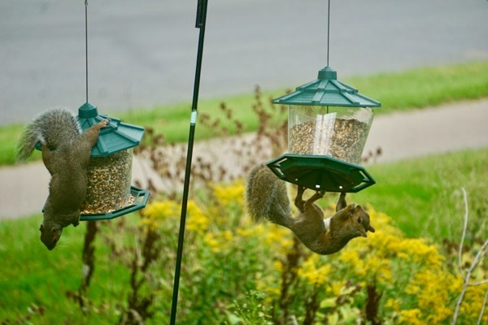
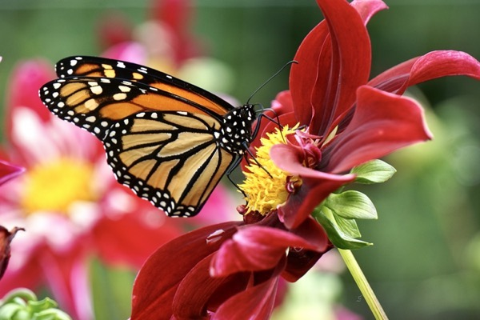
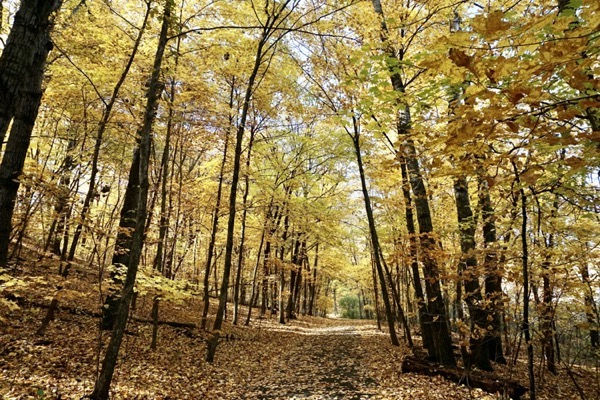
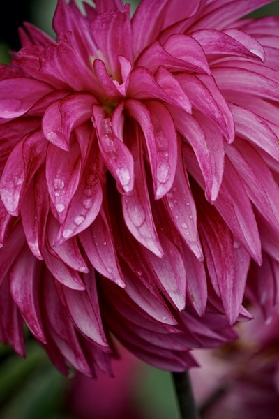
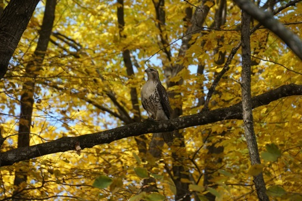
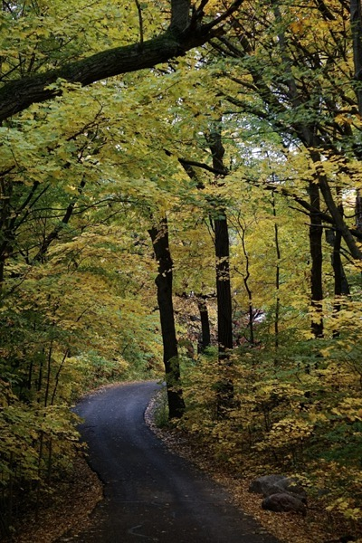
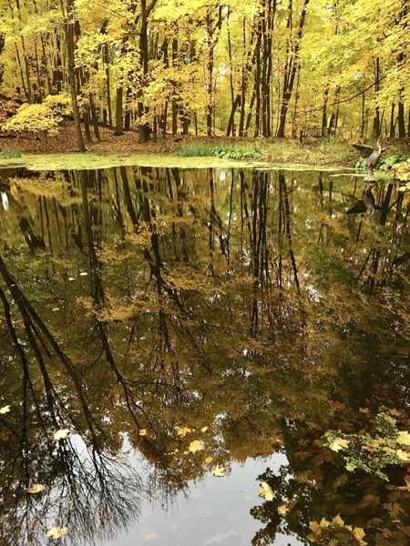
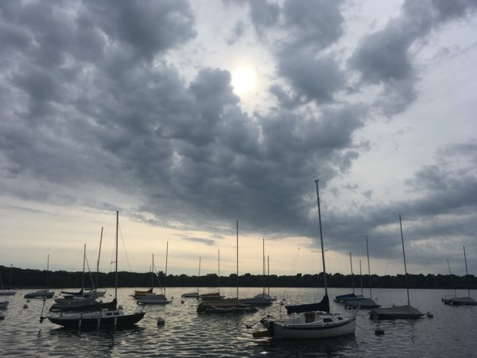
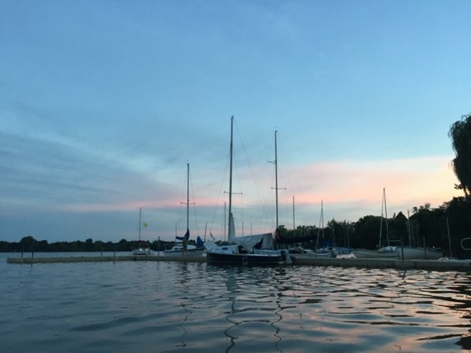

Holden Beach at sunset in 2018.

Squirrels go to great lengths to get food out of our bird feeders.

A bunny at the University of Minnesota Landscape Arboretum looks out at a walking path.

A Monarch butterfly sits on a flower pedal at the University of Minnesota Landscape Arboretum.

Fall leaves line a path at the University of Minnesota Landscape Arboretum.

Rain drips off a flower at the University of Minnesota Landscape Arboretum.

A hawk sits on a tree branch at the University of Minnesota Landscape Arboretum.

A walkway is lined with yellow leaves at the University of Minnesota Landscape Arboretum.

Fall leaves are reflected in a small pond at the at the University of Minnesota Landscape Arboretum.

Boats sit idle at Lake Harriet.

Boats sit in the water on Lake Nokomis.